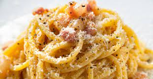

How to make Carbonara

How to make delicious carbonara
This classic spaghetti alla carbonara recipe is smooth, creamy, and full
of rich Italian flavor.
Ingredients
- 2 teaspoons olive oil
- 1 pound guanciale (cured pork cheek), diced
- 1 (16 ounce) package spaghetti
- 3 large eggs
- 10 tablespoons grated Pecorino Romano cheese, divided
- salt and freshly ground black pepper to taste
Steps